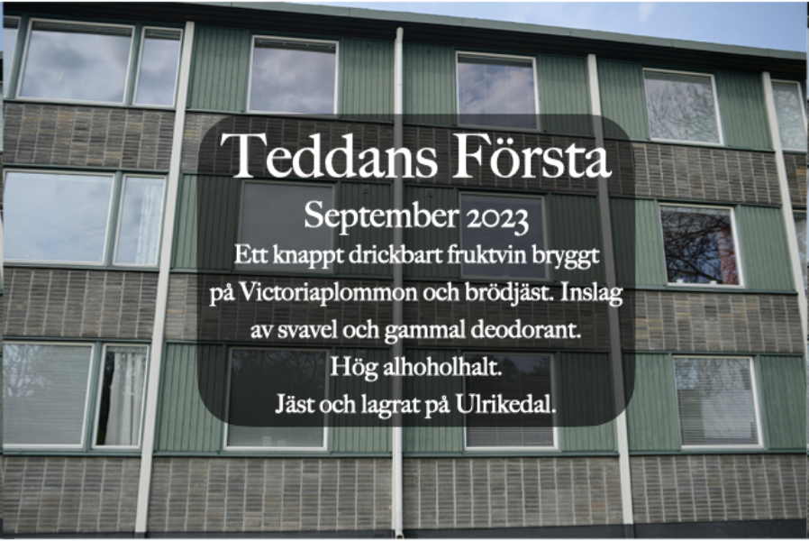
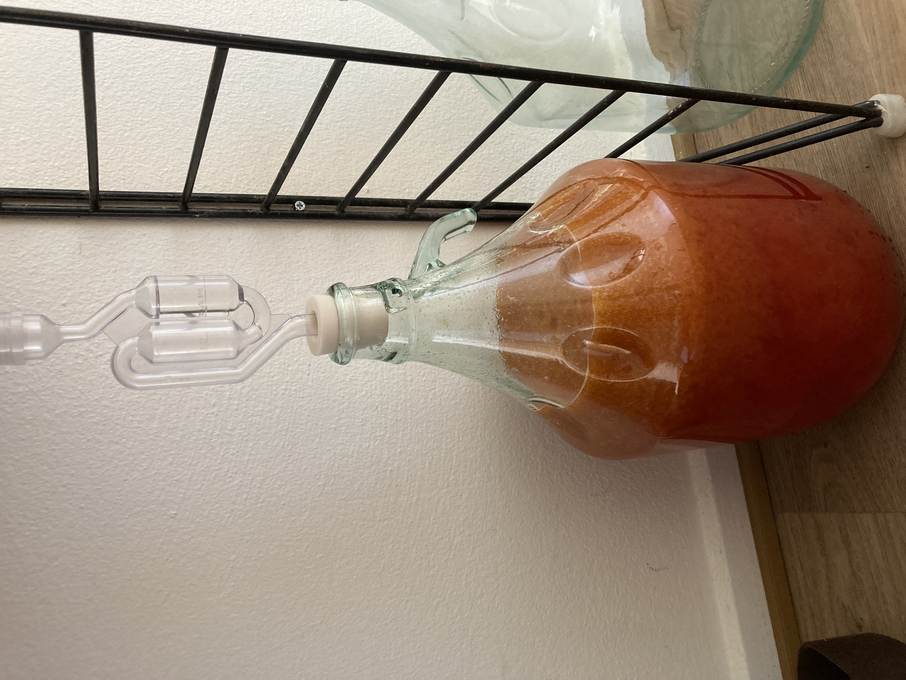

The fine art of making cheap fruit wine
Teddans Första
This is the first wine that I brewed. It taught me that it is a bad idea to use bread yeast. As the label states, it tasted like sulfur and old deodorant.
Teddans Andra

This wine was brewed on both plums and grapes. Enlightened from my first wine, I used wine yeast and the wine turned out very drinkable!
Teddans Tredje
My third wine, made on different kinds of small yellow and red plums. I also experimented with using black tea for tannins. It tastes better than my first wine but not as good as my second.
Teddans Fjärde
I am planning on brewing a real wine, meaning using only grapes and no other fruit. My grapes are soon ripe enough. Updates can be expected!